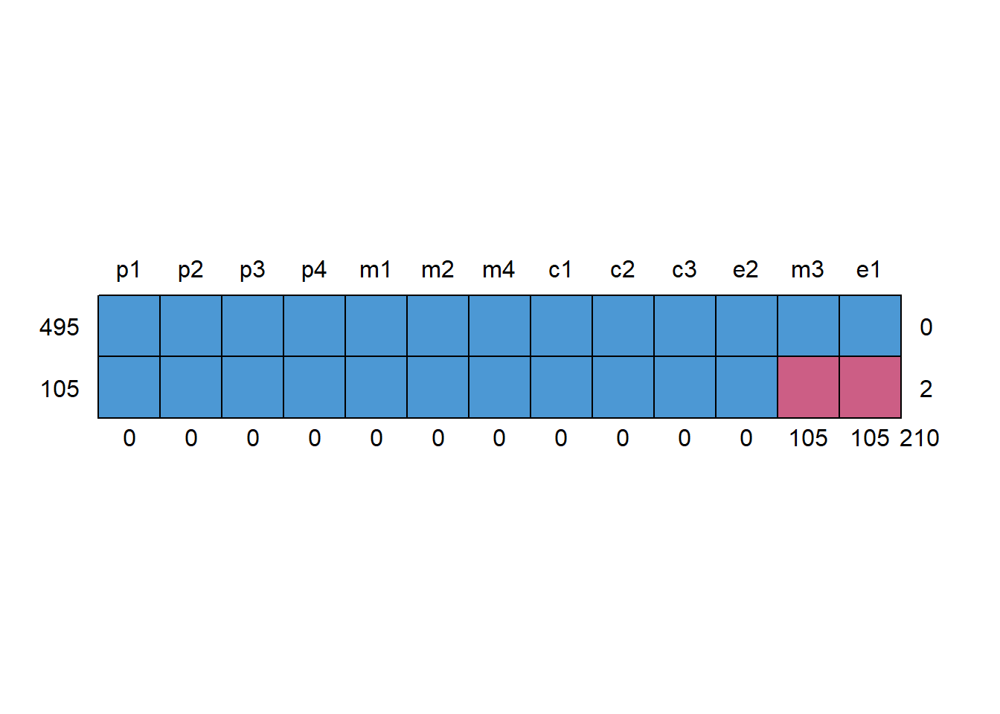

Show code
library(lavaan)
# Optional packages (install if needed)
# install.packages(c("semTools", "mice"))
library(semTools)
library(mice)
set.seed(1234)Tommaso Feraco
By the end of this lab, you can:
We reuse the same model as in Lesson 6 (measurement + structural), then we add:
simulate_sem_data <- function(N = 600, seed = 1234,
add_skew = TRUE,
add_outliers = TRUE) {
set.seed(seed)
model_pop <- "
# Measurement
peer =~ 0.80*p1 + 0.70*p2 + 0.60*p3 + 0.70*p4
media =~ 0.70*m1 + 0.80*m2 + 0.60*m3 + 0.70*m4
comp =~ 0.70*c1 + 0.70*c2 + 0.60*c3
eat =~ 0.70*e1 + 0.60*e2
# Structural
comp ~ 0.40*peer + 0.50*media
eat ~ 0.35*comp
"
dat <- simulateData(model_pop, sample.nobs = N)
if (add_skew) {
skew_vars <- c("p1","p2","m1","m2","c1")
for (v in skew_vars) dat[[v]] <- exp(dat[[v]] / 2)
}
if (add_outliers) {
set.seed(seed)
ix <- sample(seq_len(N), size = round(0.03 * N)) # ~3% outliers
dat$m4[ix] <- dat$m4[ix] + rnorm(length(ix), mean = 0, sd = 4)
dat$c3[ix] <- dat$c3[ix] + rnorm(length(ix), mean = 0, sd = 4)
}
dat
}
make_missing_mar <- function(dat, prop = 0.20, seed = 1234,
vars = c("e1","m3")) {
set.seed(seed)
# Observed proxy for the latent 'peer' factor (think: sum score, previous wave, etc.)
peer_obs <- rowMeans(dat[, c("p1","p2","p3","p4")], na.rm = TRUE)
# Base MAR mechanism: higher peer_obs -> higher missingness probability
p_base <- plogis(as.numeric(scale(peer_obs))) # in (0,1), mean ~ 0.5
# Calibrate to hit approx prop missing (cap to avoid p > 1)
k <- min(0.95, prop / mean(p_base))
p_miss <- pmin(p_base * k, 0.95)
miss <- runif(nrow(dat)) < p_miss
for (v in vars) dat[[v]][miss] <- NA
attr(dat, "missing_mechanism") <- list(type = "MAR", prop_target = prop, vars = vars)
dat
}
# Build the dataset used throughout the lab
dat <- simulate_sem_data(N = 600, seed = 1234)
dat <- make_missing_mar(dat, prop = 0.20, seed = 1234)
round(colMeans(is.na(dat)), 3) p1 p2 p3 p4 m1 m2 m3 m4 c1 c2 c3 e1 e2
0.000 0.000 0.000 0.000 0.000 0.000 0.175 0.000 0.000 0.000 0.000 0.175 0.000 Task
Suggested tools: colMeans(is.na(.)), md.pattern() (mice), and simple regressions.
p1 p2 p3 p4 m1 m2 m3 m4 c1 c2 c3 e1 e2
0.000 0.000 0.000 0.000 0.000 0.000 0.175 0.000 0.000 0.000 0.000 0.175 0.000 
p1 p2 p3 p4 m1 m2 m4 c1 c2 c3 e2 m3 e1
495 1 1 1 1 1 1 1 1 1 1 1 1 1 0
105 1 1 1 1 1 1 1 1 1 1 1 0 0 2
0 0 0 0 0 0 0 0 0 0 0 105 105 210
Call:
lm(formula = r_e1 ~ peer_obs)
Residuals:
Min 1Q Median 3Q Max
-0.47741 -0.20106 -0.14282 -0.07445 0.99382
Coefficients:
Estimate Std. Error t value Pr(>|t|)
(Intercept) 0.10767 0.02008 5.363 1.17e-07 ***
peer_obs 0.11724 0.02283 5.136 3.81e-07 ***
---
Signif. codes: 0 '***' 0.001 '**' 0.01 '*' 0.05 '.' 0.1 ' ' 1
Residual standard error: 0.3725 on 598 degrees of freedom
Multiple R-squared: 0.04224, Adjusted R-squared: 0.04064
F-statistic: 26.37 on 1 and 598 DF, p-value: 3.812e-07We now fit the same model under two missing-data choices.
model_sem <- "
# Measurement
peer =~ p1 + p2 + p3 + p4
media =~ m1 + m2 + m3 + m4
comp =~ c1 + c2 + c3
eat =~ e1 + e2
# Structural
comp ~ peer + media
eat ~ comp
"
key_paths <- function(fit) {
pe <- parameterEstimates(fit)
pe <- pe[pe$op == "~" & pe$lhs %in% c("comp","eat"), ]
pe[pe$rhs %in% c("peer","media","comp"),
c("lhs","op","rhs","est","se","z","pvalue")]
}Task
missing = "fiml". chisq df cfi tli rmsea srmr
56.563 61.000 1.000 1.008 0.000 0.030 chisq df cfi tli rmsea srmr
55.633 61.000 1.000 1.009 0.000 0.027 lhs op rhs est se z pvalue
listwise.14 comp ~ peer 0.387 0.103 3.738 0.000
listwise.15 comp ~ media 0.428 0.093 4.609 0.000
listwise.16 eat ~ comp 0.428 0.124 3.447 0.001
fiml.14 comp ~ peer 0.412 0.089 4.605 0.000
fiml.15 comp ~ media 0.451 0.085 5.283 0.000
fiml.16 eat ~ comp 0.427 0.122 3.503 0.000Because we introduced skewness and heavy tails, normal-theory SEs can be too optimistic.
Task
estimator = "MLR" and missing = "fiml". chisq df cfi tli rmsea srmr
55.633 61.000 1.000 1.009 0.000 0.027 chisq df cfi tli rmsea srmr
55.633 61.000 1.000 1.009 0.000 0.027 lhs op rhs est se z pvalue
fiml_ML.14 comp ~ peer 0.412 0.089 4.605 0.000
fiml_ML.15 comp ~ media 0.451 0.085 5.283 0.000
fiml_ML.16 eat ~ comp 0.427 0.122 3.503 0.000
fiml_MLR.14 comp ~ peer 0.412 0.091 4.506 0.000
fiml_MLR.15 comp ~ media 0.451 0.146 3.082 0.002
fiml_MLR.16 eat ~ comp 0.427 0.122 3.505 0.000Task
e1 and m3. p1 p2 p3 p4 m1 m2 m3 m4 c1 c2 c3 e1 e2
0.000 0.000 0.000 0.000 0.000 0.000 0.402 0.000 0.000 0.000 0.000 0.402 0.000 lhs op rhs est se z pvalue
listwise.14 comp ~ peer 0.341 0.103 3.295 0.001
listwise.15 comp ~ media 0.589 0.117 5.045 0.000
listwise.16 eat ~ comp 0.799 0.209 3.822 0.000
fiml_ML.14 comp ~ peer 0.279 0.073 3.807 0.000
fiml_ML.15 comp ~ media 0.517 0.094 5.513 0.000
fiml_ML.16 eat ~ comp 0.660 0.172 3.832 0.000
fiml_MLR.14 comp ~ peer 0.279 0.071 3.930 0.000
fiml_MLR.15 comp ~ media 0.517 0.109 4.754 0.000
fiml_MLR.16 eat ~ comp 0.660 0.171 3.850 0.000This is a didactic stress test: we create missingness depending on the (unobserved) value itself.
make_missing_mnar <- function(dat, prop = 0.20, seed = 999, var = "e1") {
set.seed(seed)
p_base <- plogis(as.numeric(scale(dat[[var]]))) # depends on the value itself (MNAR)
k <- min(0.95, prop / mean(p_base))
p_miss <- pmin(p_base * k, 0.95)
miss <- runif(nrow(dat)) < p_miss
dat[[var]][miss] <- NA
attr(dat, "missing_mechanism") <- list(type = "MNAR", prop_target = prop, vars = var)
dat
}
dat_mnar <- simulate_sem_data(N = 600, seed = 3333)
dat_mnar <- make_missing_mnar(dat_mnar, prop = 0.25, seed = 3333, var = "e1")
round(colMeans(is.na(dat_mnar)), 3) p1 p2 p3 p4 m1 m2 m3 m4 c1 c2 c3 e1 e2
0.000 0.000 0.000 0.000 0.000 0.000 0.000 0.000 0.000 0.000 0.000 0.228 0.000 lhs op rhs est se z pvalue
14 comp ~ peer 0.223 0.069 3.255 0.001
15 comp ~ media 0.471 0.121 3.881 0.000
16 eat ~ comp 0.789 0.155 5.091 0.000Task
Write a short paragraph (6–10 lines) that includes:
You can start from this scaffold:
The SEM was estimated in
lavaanusing ______ with ______ for missing data under a ______ assumption. Model fit was evaluated using ______. The paths from ______ to ______ and from ______ to ______ were ______ (β = , SE = , p = ). Sensitivity checks comparing ____ vs ______ indicated that ______.
chisq df cfi tli rmsea srmr
55.633 61.000 1.000 1.009 0.000 0.027 R version 4.5.1 (2025-06-13 ucrt)
Platform: x86_64-w64-mingw32/x64
Running under: Windows 11 x64 (build 26100)
Matrix products: default
LAPACK version 3.12.1
locale:
[1] LC_COLLATE=Italian_Italy.utf8 LC_CTYPE=Italian_Italy.utf8
[3] LC_MONETARY=Italian_Italy.utf8 LC_NUMERIC=C
[5] LC_TIME=Italian_Italy.utf8
time zone: Europe/Rome
tzcode source: internal
attached base packages:
[1] stats graphics grDevices utils datasets methods base
other attached packages:
[1] mice_3.18.0 semTools_0.5-7 lavaan_0.6-19
loaded via a namespace (and not attached):
[1] shape_1.4.6.1 xfun_0.52 htmlwidgets_1.6.4 lattice_0.22-7
[5] quadprog_1.5-8 vctrs_0.6.5 tools_4.5.1 Rdpack_2.6.4
[9] generics_0.1.4 stats4_4.5.1 parallel_4.5.1 sandwich_3.1-1
[13] tibble_3.3.0 pan_1.9 pkgconfig_2.0.3 jomo_2.7-6
[17] Matrix_1.7-3 lifecycle_1.0.4 compiler_4.5.1 mnormt_2.1.1
[21] codetools_0.2-20 htmltools_0.5.8.1 yaml_2.3.10 glmnet_4.1-10
[25] pillar_1.11.0 nloptr_2.2.1 tidyr_1.3.1 MASS_7.3-65
[29] reformulas_0.4.1 iterators_1.0.14 rpart_4.1.24 boot_1.3-31
[33] multcomp_1.4-28 foreach_1.5.2 mitml_0.4-5 nlme_3.1-168
[37] tidyselect_1.2.1 digest_0.6.37 mvtnorm_1.3-3 dplyr_1.1.4
[41] purrr_1.0.4 splines_4.5.1 fastmap_1.2.0 grid_4.5.1
[45] cli_3.6.5 magrittr_2.0.3 survival_3.8-3 broom_1.0.8
[49] pbivnorm_0.6.0 TH.data_1.1-3 backports_1.5.0 estimability_1.5.1
[53] rmarkdown_2.29 emmeans_1.11.1 nnet_7.3-20 lme4_1.1-37
[57] zoo_1.8-14 coda_0.19-4.1 evaluate_1.0.4 knitr_1.50
[61] rbibutils_2.3 rlang_1.1.6 Rcpp_1.0.14 xtable_1.8-4
[65] glue_1.8.0 rstudioapi_0.17.1 minqa_1.2.8 jsonlite_2.0.0
[69] R6_2.6.1